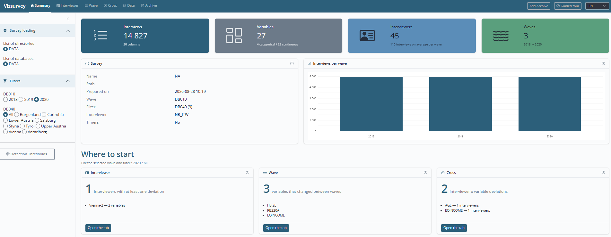
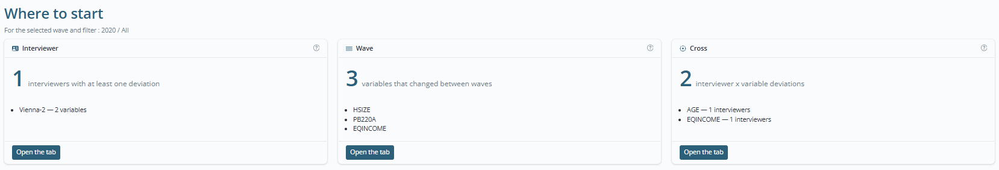
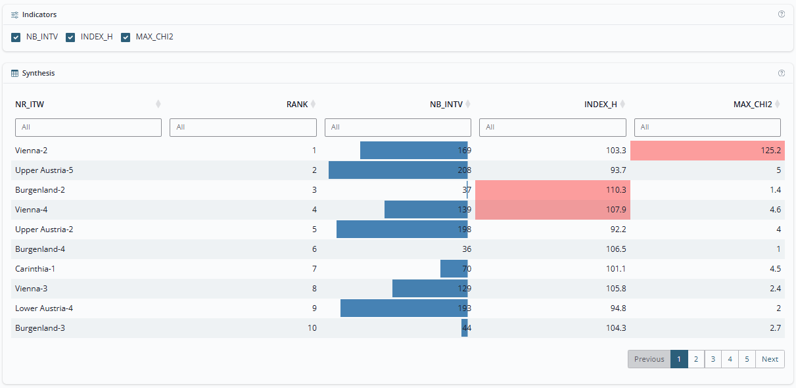
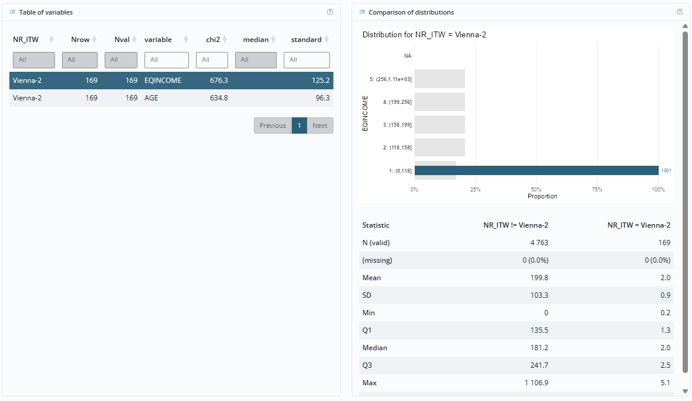
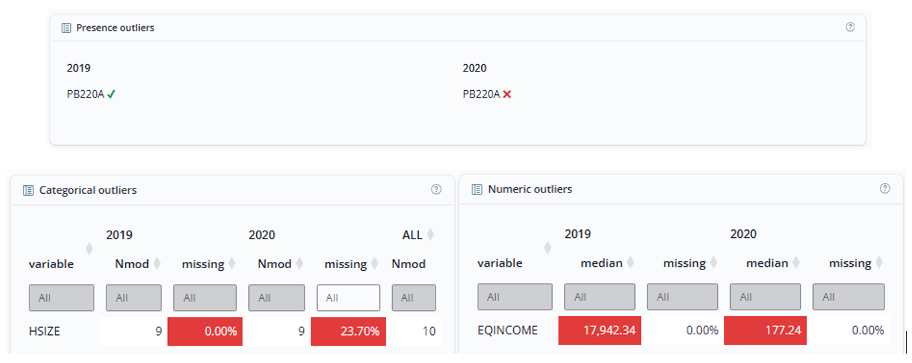
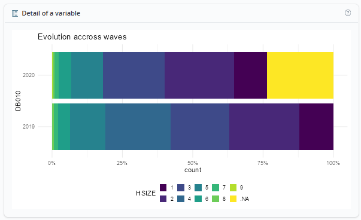
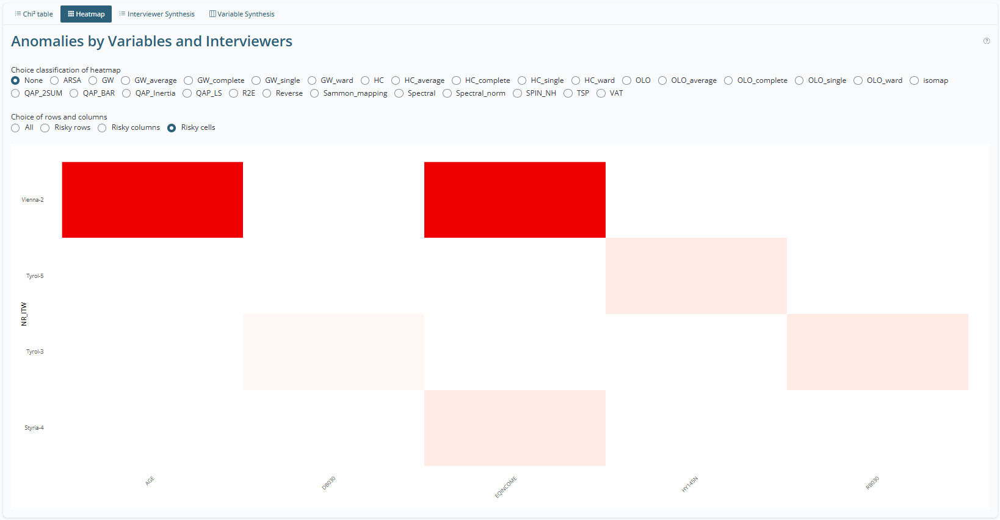

Introduction
Pourquoi vizsurvey ?
Dans un processus statistique aligné sur le GSBPM, la qualité ne se joue pas seulement en amont (échantillonnage, questionnaire, collecte) ou en aval (analyse, diffusion). Entre la collecte et l’analyse se situe une phase clé : le contrôle et le suivi du matériau collecté, pour repérer rapidement les anomalies, documenter les écarts et, si nécessaire, déclencher une action corrective.
{vizsurvey} répond à ce besoin : une interface interactive pour parcourir vos données, comparer des profils de réponse et prioriser les investigations. L’objectif n’est pas de tirer des conclusions statistiques, mais de guider l’œil de l’analyste avec des indicateurs simples (distances, rangs) et des visualisations adaptées.
La cohérence entre enquêteur·rices
Le rôle de l’enquêteur·rice est central : compréhension fine du questionnaire, respect du routage, conduite de l’entretien. Des effets enquêteur·rice peuvent néanmoins apparaître (des différences systématiques de distribution des réponses selon la personne qui conduit l’entretien), issus de méthodes de travail différentes, de biais involontaires, d’erreurs récurrentes ou, plus rarement, de fraude.
Sur ce volet, {vizsurvey} permet de :
- comparer les distributions de réponse d’un·e enquêteur·rice à celles de tous les autres ;
- classer les enquêteur·rices selon un score d’anomalie ;
- concentrer la relecture sur les croisements enquêteur·rice × variable les plus atypiques ;
- si un audit trail (timers) est disponible, examiner les durées d’entretien, le travail de nuit ou les entretiens trop rapprochés. Le travail sur l’audit trail est en refonte pour être le plus facilement accessible pour tous les instituts.
La cohérence entre vagues
D’une vague à l’autre, les questionnaires évoluent (libellés, routages, filtres), mais les variables cibles doivent rester comparables. {vizsurvey} permet de définir une variable de vague (par exemple l’année de l’enquête) et met en évidence :
- les écarts de distribution ou de niveau (proportions, médianes) ;
- les variables présentant des ruptures qui méritent un second regard (mise en œuvre du routage, recodage, version du questionnaire, changement de mode de collecte, etc.).
Depuis la version 0.4, la vague peut être définie sur deux niveaux (par exemple l’année et le trimestre) : le premier niveau est obligatoire, le second facultatif, en cascade dans l’interface.
Lancer vizsurvey
Il existe deux manières principales de lancer {vizsurvey} : depuis
une base présente en R (runVizsurvey_from_r), ou en
préparant une arborescence de fichiers pour analyser plusieurs enquêtes
à la fois (runVizsurvey_from_folder).
Depuis un objet R
Pour lancer l’interface depuis un objet R, il suffit d’appeler
runVizsurvey_from_r avec le nom de l’objet.
library(vizsurvey)
# Not Run
runVizsurvey_from_r(df)À ce stade, l’interface est presque vide : vous n’avez fourni aucun paramètre, comme une variable identifiant les enquêteur·rices, une variable de vague, ou une variable de filtre. Voici la commande complète :
# Not Run
runVizsurvey_from_r(df,
var_intvwr = "NR_ITW",
var_wave = "YEAR",
var_filter = "REGIO")Ici, var_intvwr identifie les enquêteur·rices,
var_wave identifie les vagues, et var_filter
est une variable facultative servant à filtrer
l’analyse (par exemple la région). Quand un filtre est fourni, les
analyses sont produites à la fois au niveau global et au sein de chaque
valeur du filtre.
var_wave et var_filter acceptent chacun
deux variables : la seconde est alors un second niveau,
emboîté dans le premier.
# Not Run
runVizsurvey_from_r(df,
var_intvwr = "NR_ITW",
var_wave = c("YEAR", "QUARTER"),
var_filter = "REGIO")À noter : les noms de variables sont traités sans tenir compte de la casse (tout est converti en majuscules en interne).
Depuis une arborescence de dossiers
{vizsurvey} peut gérer plusieurs dossiers contenant différentes
enquêtes. Dans ce type d’organisation, l’hypothèse est que plusieurs
personnes utilisent {vizsurvey} à des moments différents. Comme le
calcul des statistiques à chaque ouverture serait trop lent, on prépare
les fichiers à l’avance avec prepa_survey() : l’ouverture
de l’interface est alors immédiate.
Chaque enquête (donc chaque dossier de données) doit contenir un
fichier de configuration config.txt et un fichier
global.rds généré par la préparation. La vignette
de préparation des données détaille tout cela. Voici par exemple la
commande pour une structure à deux niveaux de dossiers :
runVizsurvey_from_folder("data", depth_folder = 2)Cette fonction accepte aussi trois fichiers transverses facultatifs,
décrits dans la vignette de préparation : un
dictionnaire des variables (path_dict),
une nomenclature de libellés (path_nomen),
et un fichier d’archive partagé
(path_archive).
runVizsurvey_from_folder("data", depth_folder = 2,
path_dict = "meta/dictionnaire.rds",
path_nomen = "meta/nomenclature.csv",
path_archive = "meta/archive.csv")Les données d’exemple
Le package {laeken} fournit un extrait de l’enquête SILC. La fonction
create_eusilc_sim() en dérive un jeu d’exemple prêt à
l’emploi : elle crée un numéro d’enquêteur·rice fictif
(nr_itw, à partir de la province), une vague fictive
(db010, entre 2018 et 2020), et y injecte des
erreurs volontaires que l’interface doit permettre de retrouver
:
- pour l’enquêteur·rice Vienna-2 : l’âge est divisé
par 10, le revenu équivalent par 100, et la modalité 5 de
pl030est remplacée par des valeurs manquantes ; - pour la vague 2020 : la variable
pb220aest entièrement manquante, la modalité 4 dehsizedisparaît, et le revenu équivalent est divisé par 100.
library(vizsurvey)
df <- create_eusilc_sim()
runVizsurvey_from_r(df,
var_intvwr = "nr_itw",
var_wave = "db010",
var_filter = "db040")C’est ce jeu de données qui illustre toute la suite de cette vignette.
Tour de l’interface

La barre latérale
La barre latérale, à gauche, commande tout le reste de l’application. On y trouve :
- le chargement de la base : le choix du dossier et
de l’enquête (en mode
from_folder) ; - le filtrage : la vague et le filtre courants. La
vague est obligatoire ; quand elle a deux niveaux, un second sélecteur
apparaît en cascade sous le premier, facultatif (
Allpar défaut). Le filtre fonctionne de la même façon, avecAllpour ne pas filtrer ; - le bouton Seuils de détection, qui ouvre les paramètres de sensibilité.
Les seuils de détection
Rien n’est signalé en dessous de ces seuils. Quatre paramètres sont réglables :
| Seuil | Défaut | Rôle |
|---|---|---|
| Nombre minimum de lignes | 30 | en dessous, l’enquêteur·rice ou la variable est exclue de la détection |
| Nombre minimum de valeurs valides | 30 | en dessous, la variable est exclue de l’analyse |
| Taux de variation minimum (vagues) | 0.5 | variation relative à partir de laquelle une case devient rouge dans l’onglet Vague |
| Distance de chi² / écart de médiane minimum | 5 | écart standardisé à partir duquel un croisement enquêteur·rice × variable est signalé |
Il n’existe pas de seuil statistiquement fondé pour ce type d’analyse : c’est à l’équipe de coordination de le régler par tâtonnement. Baissez-le pour voir plus de cas, montez-le pour ne garder que les plus francs.
L’aide contextuelle et la visite guidée
Deux dispositifs d’aide sont intégrés :
- chaque carte de l’application porte un bouton ? qui ouvre une explication : ce que la carte affiche, ce que valent ses colonnes, comment la lire ;
- le bouton Visite guidée, dans la barre de navigation, déroule un tutoriel d’une dizaine d’étapes sur les données actuellement chargées : chaque étape ouvre un onglet, entoure un élément de l’écran et l’explique.
L’interface est disponible en français, anglais et néerlandais (sélecteur en haut à droite). L’aide et la visite guidée suivent la langue choisie.
L’onglet Synthèse
C’est l’onglet d’accueil. Il répond à deux questions : qu’est-ce qui est chargé ? et par où commencer ?
La partie haute présente l’enquête : quatre compteurs (entretiens, variables analysées, enquêteur·rices, vagues), une carte d’identité (nom, chemin, date de la dernière préparation, rôle des variables, présence des timers) et le nombre d’entretiens par vague — découpé par le second niveau de vague quand il existe.
La partie basse, « Par où commencer », donne trois points d’entrée chiffrés pour la vague et le filtre courants : le nombre d’enquêteur·rices présentant au moins un écart, le nombre de variables ayant varié entre les vagues, et le nombre de croisements enquêteur·rice × variable au-dessus des seuils. Chaque carte liste les trois cas les plus marquants et un bouton ouvre l’onglet correspondant.

Sur les données d’exemple, la carte Enquêteur signale d’emblée Vienna-2.
L’onglet Enquêteur
La synthèse
Le tableau principal affiche une ligne par enquêteur·rice, pour la vague et le filtre courants, classée par un rang d’anomalie :
-
RANKprovient d’un score d’Isolation Forest calculé sur l’ensemble des indicateurs : plus la combinaison d’indicateurs est rare, plus le rang est élevé ; -
NB_INTVest le nombre d’entretiens,INDEX_Hun indice d’homogénéité des réponses,MAX_CHI2le plus grand écart observé sur une variable ; - si un audit trail est disponible, s’ajoutent les indicateurs de
durée (
DURATION_*) et les parts d’entretiens signalés (PC_*: nuit, trop courts, trop rapprochés).
Une case rouge dépasse de plus de deux écarts-types la moyenne de sa colonne. La carte Indicateurs, au-dessus, permet d’écarter un indicateur du tableau et du score — utile quand un indicateur n’a pas de sens pour l’enquête (le travail de nuit pour des entretiens sur rendez-vous, par exemple).

Si une nomenclature a été fournie (path_nomen), les
libellés des variables s’affichent sous les noms de colonnes.
Principe directeur : aucun test statistique n’est réalisé. {vizsurvey} calcule des distances, des scores et des rangs destinés à prioriser la relecture. Les conclusions restent de la responsabilité de l’équipe méthodologique.
Le détail par variable
En cliquant sur un·e enquêteur·rice, les onglets du dessous se
remplissent. « Détail par variable » liste ses variables classées par
écart aux autres enquêteur·rices : chi2 mesure la distance
entre sa distribution et la distribution de référence,
standard est cette distance normalisée par variable — c’est
elle qui est comparée au seuil.
Point important : les variables continues sont découpées en cinq classes (par quantiles) avant la comparaison. Toutes les variables se lisent donc de la même façon, avec une seule distance de chi², au lieu d’un mélange de chi² et d’écarts de médiane.
Un clic sur une variable affiche :
- la comparaison des distributions : la distribution de l’enquêteur·rice (en foncé) face à celle de tous les autres (en gris), accompagnée d’un tableau de statistiques descriptives comparées ;
- la distribution des modalités : pour chaque modalité, la distribution de sa part parmi tous les enquêteur·rices, avec une ligne rouge sur la valeur de l’enquêteur·rice. Elle répond à une question que le graphique précédent ne traite pas : cet·te enquêteur·rice est-il·elle réellement isolé·e, ou beaucoup d’autres sont-ils au même niveau ?

Sur les données d’exemple, le revenu de Vienna-2 (multiplié par 100) saute aux yeux : sa densité est décalée d’un ordre de grandeur.
Le détail par entretien (audit trail)
Quand des timers sont disponibles, cet onglet reconstitue les
entretiens de l’enquêteur·rice : durée totale, écart avec l’entretien
précédent, drapeaux 🔴 (entretien trop court, travail de nuit, plusieurs
sessions, entretiens qui se chevauchent). Un clic sur un entretien ouvre
ses sessions, puis le détail item par item. Les seuils de ces drapeaux
sont fixés à la préparation, dans config.txt.
Les détails sur l’enquêteur·rice
Le dernier onglet situe l’enquêteur·rice : la répartition
géographique de ses entretiens (selon la variable
var_info_geo du config.txt) et son nombre
d’entretiens par vague et par filtre, sur tout l’historique. Un·e
enquêteur·rice couvrant une zone inhabituelle peut expliquer des écarts
observés ailleurs : les répondants ne sont tout simplement pas les
mêmes.
L’onglet Vague
Les tableaux d’écarts
L’onglet compare la vague sélectionnée dans la barre latérale aux vagues cochées dans « Comparer avec ». Les vagues de comparaison sont proposées au même niveau que la sélection : des années si vous avez choisi une année, des trimestres si vous avez choisi un trimestre.
Trois cartes structurent la lecture :
- les variables absentes d’une vague : cette carte n’apparaît que si une variable est présente dans une vague et absente d’une autre. C’est la première chose à vérifier : une variable absente ne peut pas être comparée ;
- les variables catégorielles qui ont bougé : une ligne par variable, un bloc de colonnes par vague avec la part de valeurs manquantes et le nombre de modalités observées. Une case devient rouge quand la variation dépasse le taux de variation minimum ;
- les variables numériques qui ont bougé : même principe, avec la part de manquants et la médiane — préférée à la moyenne car moins sensible aux valeurs extrêmes.

Sur les données d’exemple, en sélectionnant la vague 2020 :
pb220a apparaît dans les absences, hsize dans
les catégorielles (hausse de valeurs manquantes), et
eqIncome dans les numériques (médiane divisée par 100 — un
changement d’échelle typique).
L’analyse graphique
Un clic sur une ligne remplit la carte de détail à droite :
- pour une variable catégorielle : la part de chaque modalité, vague
par vague, les valeurs manquantes apparaissant comme une modalité
.NA. Une rupture dans les bandes de couleur confirme ce que le tableau a signalé ; - pour une variable numérique : la densité, une courbe par vague, tronquée aux 1er et 99e centiles pour que quelques valeurs extrêmes n’écrasent pas les courbes.

L’onglet Croisé
C’est l’onglet le plus dense : il croise les enquêteur·rices et les variables. Quatre sous-onglets :
- la table de chi² : une ligne par couple enquêteur·rice × variable dont l’écart dépasse le seuil, triée par écart décroissant. C’est le point d’entrée quand on ne sait pas par où commencer ;
- la heatmap : une ligne par enquêteur·rice, une colonne par variable, une case colorée quand l’écart dépasse le seuil. On peut zoomer sur les lignes à risque, les colonnes à risque ou les seules cases au-dessus du seuil, et réordonner lignes et colonnes par sériation pour regrouper les profils proches. Le survol d’une case affiche les valeurs sous-jacentes, le clic ouvre les distributions en bas de page ;
- la synthèse par enquêteur·rice : le classement par score d’anomalie, et pour l’enquêteur·rice sélectionné·e, la liste de ses variables les plus contributives ;
- la synthèse par variable : le même classement, vu du côté des variables. Une variable en tête de ce tableau relève souvent d’un problème de questionnaire (formulation ambiguë, routage) plutôt que d’un·e enquêteur·rice.

La lecture de la heatmap tient en trois règles :
- une case isolée n’est pas en soi un problème : avec beaucoup de croisements, quelques valeurs extrêmes sont normales ;
- une ligne régulièrement rouge suggère un comportement récurrent (erreur de procédure, incompréhension, routage mal appliqué, voire fraude) ;
- une colonne rouge désigne une variable fragile (libellé ambigu, routage, effet de sous-population) plutôt que les enquêteur·rices.
Pour départager un effet enquêteur·rice d’un effet de sous-population, utilisez le filtre de la barre latérale : si les cases rouges disparaissent une fois l’analyse restreinte à la zone de l’enquêteur·rice, l’explication est structurelle, pas individuelle.
En bas de page, les cartes de comparaison des distributions et de distribution des modalités fonctionnent comme dans l’onglet Enquêteur. Si un dictionnaire a été fourni, une carte affiche en plus les entrées du dictionnaire pour la variable sélectionnée — pratique pour vérifier la formulation exacte d’une question avant de conclure.
Les onglets Données, Dictionnaire et Archive
- Données : les données telles qu’elles ont été préparées, avec une sélection de variables et des filtres par colonne. Utile pour vérifier une valeur vue dans une analyse ou comprendre comment une variable est codée ;
-
Dictionnaire : cet onglet n’apparaît que si un
dictionnaire a été fourni au lancement (
path_dict). Il affiche le fichier tel quel, avec recherche et filtres ; - Archive : l’historique des observations. Le bouton Ajouter à l’historique enregistre la date, l’utilisateur·rice, l’enquête, la vague, l’enquêteur·rice, l’entretien et la variable concernés, plus un commentaire libre. Le fichier est partagé par toutes les personnes qui utilisent le même chemin d’archive : notez aussi les fausses alertes, c’est ce qui évite à la personne suivante de refaire la même investigation.
La vignette de métadonnées détaille comment intégrer ces éléments dans votre outil.
Démarche conseillée
- Sélectionnez l’enquête, la vague et éventuellement le filtre.
- Partez de l’onglet Synthèse : les trois points d’entrée donnent l’ampleur de ce qu’il y a à examiner.
- Vérifiez d’abord l’onglet Vague : une variable absente ou un changement d’échelle expliquent souvent des écarts en cascade ailleurs.
- Parcourez la heatmap de l’onglet Croisé : lignes rouges (enquêteur·rices), colonnes rouges (variables).
- Cliquez sur les cas marquants pour ouvrir les distributions, et comparez la forme, pas seulement l’écart.
- Contrôlez avec le filtre qu’il ne s’agit pas d’un effet de sous-population.
- Consignez chaque vérification dans l’Archive, y compris les fausses alertes.
Conclusion
L’analyse de cohérence par enquêteur·rice ou par vague est une étape essentielle du contrôle qualité d’une enquête, mais elle n’a pas vocation à produire des jugements automatiques. {vizsurvey} n’infère rien : il organise l’exploration et met en évidence les régularités, écarts ou incohérences susceptibles d’attirer l’attention de l’équipe de coordination. L’interprétation des résultats doit toujours s’appuyer sur le contexte opérationnel : consignes données aux enquêteur·rices, conditions de collecte, etc. Ces éléments seuls permettent de distinguer une véritable anomalie d’un simple effet de structure.
Par ailleurs, les informations mobilisées concernent parfois des données sensibles, sur les enquêteur·rices comme sur les ménages enquêtés ; elles doivent donc être traitées dans le strict respect des règles applicables en matière de confidentialité et de protection des données personnelles. De notre point de vue, toute personne utilisant {vizsurvey} doit être soumise aux mêmes règles de confidentialité que celles qui s’appliquent aux fichiers sources. L’anonymisation n’est en effet nullement garantie dans l’interface : les croisements, filtres ou visualisations proposés peuvent indirectement révéler des informations individuelles ou des identifiants d’enquêteur·rices. L’accès à {vizsurvey} doit donc être restreint aux personnes habilitées à consulter les données détaillées, dans un cadre sécurisé conforme aux politiques internes de gestion des données.
En résumé, {vizsurvey} est un outil d’appui à l’analyse qui complète ceux utilisés par les équipes d’enquête, pas un outil de diagnostic automatique. Il rend visibles les comportements de collecte et outille les équipes, mais les conclusions finales reposent toujours sur leur jugement éclairé.